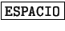
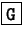
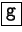
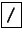
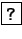
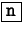
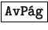
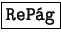
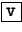

Next: El comando head
Up: Listado de comandos
Previous: El comando sort
Índice General
Este comando es de mucha utilidad, su función es paginar texto en
pantalla. Muchas veces ocurre que cuando se ejecuta algún comando, la
salida del mismo es demasiada información como para que se pueda leer
en la pantalla del monitor, entonces se puede redireccionar esta
salida al less para que permita al usuario leer sin mayores
problemas, pudiendo avanzar o retroceder en el texto con las flechas
de cursor del teclado. También se utiliza para visualizar archivos de
texto almacenados en disco.
La idea de less proviene de un paginador llamado
more, un clásico en los UNIX. El more no era lo
suficientemente amigable, es por eso que hicieron less. Su
sintaxis es la siguiente:
less [archivo...]
Este comando es un programa interactivo, es por eso que no se hablará
de argumentos sino de comandos:
- 
- Si se oprime la barra espaciadora, el less avanzará un
número de líneas igual al número de líneas por pantalla que posea la
terminal que se esté usando.
- Pulsando la tecla se va avanzando
de a una línea.
- 
- Ir al final del texto.
- 
- Ir al inicio del texto.
- 
- Ingresar una palabra a ser buscada avanzando dentro
del texto.
- 
- Ingresar una palabra a ser buscada retrocediendo
dentro del texto.
- 
- Buscar la siguiente ocurrencia de la búsqueda.
- 
- Avanzar una pantalla de texto.
- 
- Retroceder una pantalla de texto.
- 
- Cargar el editor de texto en el lugar donde se
encuentre el usuario dentro del archivo. El editor que normalmente
se utiliza es el vi, el cual se dará en la sección
4.2.

- Salir del programa.

- Repintar la pantalla. Útil cuando se está
visualizando un archivo que ha sido modificado por otro programa.
Next: El comando head
Up: Listado de comandos
Previous: El comando sort
Índice General
Proyecto Cursos - LuCAS - http://lucas.hispalinux.es/htmls/cursos.html